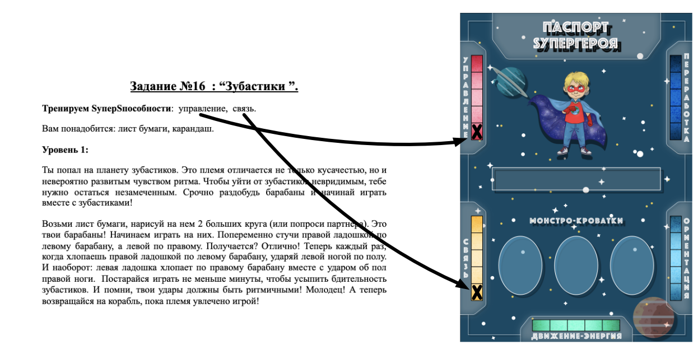
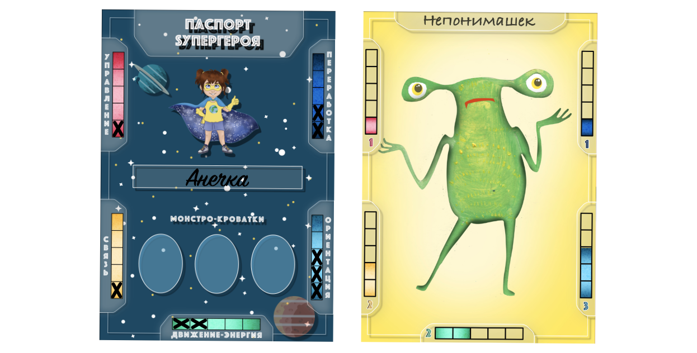
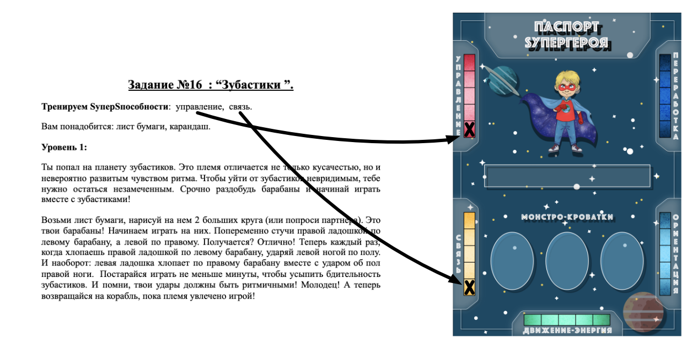

Правила игры
Цель игры
Первым приручить трех монстров, посадив их в монстрокроватки на своем корабле. А для того, чтобы это сделать, тебе предстоит развить (прокачать) свои уникальные SуперSпособности и стать настоящим Sупергероем. И пусть благодаря тебе вселенная станет добрее!
Подготовка к игре
- Подготовь несколько листов бумаги формата а4, цветные карандаши (минимум 6) и фломастеры (по одному на каждого Sупергероя), двадцатигранный игральный кубик, а также Снаряжение Sупергероя.
- Раздай каждому игроку паспорт Sупергероя. Пусть каждый впишет свое имя в соответствующее поле. Теперь посмотри на паспорт внимательно. В паспорте обозначены 5 шкал SуперSпособностей , которые ты будешь прокачивать. Каждая Sпособность измеряется по шкале от 0 до 5. Чем сильнее развита у тебя каждая из этих способностей к моменту битвы с монстром, тем больше у тебя шансов одержать в ней победу.
- Возьми колоду “Космос”, тщательно перемешай ее и положи в центр стола рубашкой вверх.
-
Для того, чтобы развивать свои SуперSпособности, ты будешь пользоваться заданиями из пяти методичек Sупергероя:“Управление”, “Связь”, “Ориентация, “Переработка”, “Движение-Энергия”. Цвет методички совпадает с цветом ссответствующей Sуперспособности в паспорте. Каждое задание в разделе имеет три уровня сложности: уровень 1, уровень 2 и уровень 3. Перед началом игры каждый Sупергерой определяет, на каком уровне он будет играть.
Если тебе от 5 до 7 лет, выполняй задания 1го уровня
Если тебе от 7 до 12 лет, выполняй задания 2го уровня
Если ты старше старше 12 лет (или вообще взрослый 😄), выполняй задания 3го уровня.
Все! Sупер! Ты готов отправляться в путь!
Ход игры
- Определите, кто ходит первым:пусть это будет тот, кто быстрее других назовет, что он ел сегодня на завтрак( при каждой новой игре можно предложить назвать что-нибудь новое, например, что порадовало в этот день, что вы делали на прошлых выходных и т.д.).
-
В каждый свой ход ты можешь совершить одно или два действия(сначала действие 1, затем действие/только действие 1/только действие 2):
-
Выбери ту SSпособность, которую ты будешь развивать во время этого хода, открой соответствующую методичку на оглавлении и кидай кубик. Число, выпавшее на кубике, указывает на номер задания, которое тебе нужно выполнить на этом ходу. По оглавлению найди в методичке задание под нужным номером, посмотри, какое снаряжение тебе пригодится в этот раз, выбери вариант для своего уровня(1го, 2 го или 3го) и читай инструкцию ( или пусть тебе поможет читать один из твоих партнеров по игре- другой Sупергерой). Выполняй задание! Справился? Чудесно! Заметь, каждое задание развивает сразу две SуперSпособности, поэтому посмотри, какую еще SS, кроме выбранной, тебе удалось развить за этот ход. Возьми фломастер и свой паспорт Sупергероя, отметь по 1 баллу в соответствующих шкалах способностей. Если игроку не удается выполнить задание нужным образом, он (при согласии партнеров по игре) получает баллы в том случае, если видно, что он приложил максимум усилий и действительно постарался.

! Если тебе выпадает задание, которое ты уже выполнял во время этой партии, можешь просто перекинуть кубик. При повторном выпадении этого задания в следующих партиях партнер поможет тебе придумать новые варианты его выполнения.
! Если твой партнер тоже хочет выполнить твое задание и получить за него баллы в свой паспорт Sупергероя, он может сделать это вместе с тобой или сразу после тебя, если ты (как хозяин задания) ему разрешишь. Ты можешь и отказаться делиться заданием. Помни, если разрешишь партнеру присоединиться, в свою очередь он скорее поделится своим заданием с тобой.
-
Открой карту из колоды “Космос”. Здесь тебя ждет 3 варианта:
- Если тебе попался бонус: просто возьми его на борт (положи слева от своего паспорта), этот бонус ты сможешь использовать 1 раз по своему желанию в любой момент игры. Использованный бонус убери обратно в коробку.
- Если ты открыл карточку “SуперИгра”: Начинай открывать по одной карте из колоды “Космос” в открытую, пока не встретишь монстра. Положи монстра в центр стола на 10 секунд, так, чтобы его видели все игроки. Пусть каждый Sупергерой постарается как можно лучше запомнить его. Теперь переверни карту монстра рубашкой вверх, и пусть все игроки начинают искать на ней очертания этого монстра. Кто первым найдет его среди других и покажет на рубашке выбранной карты, тот забирает монстра к себе на борт (кладет карту монстра справа от своего паспорта и рисует его в одной из свободных кроваток). Удалось. Тебе повезло!!! Это самый лёгкий способ приручить монстра!))
-
Если тебе выпал монстр: рассмотри его хорошенько. У каждого монстра тоже есть шкалы МонстроСпособностей, которые совпадают по цвету с твоими. Внимательно сравни свои баллы,отмеченные в паспорте, и баллы монстра по шкале каждого цвета. Ты одерживаешь победу, если твои баллы выше, чем у монстра по каждой шкале.
Пример: Sупергерой Анечка встречает монстра Непонимашека:
Как мы видим, у Анечки во всех шкалах больше или столько же баллов, сколько у Непонимашека. Но по шкале “Связь” у него два балла, а у нее только один.
АНЕЧКА НЕПОНИМАШЕК Управление 1 1 Связь 1 2 Движение-энергия 2 2 Ориентация 3 3 Переработка 2 1 К сожалению, в этот раз Анечка проигрывает бой. Однако, если у нее есть подходящая карта бонуса, она может ее использовать, чтобы себе помочь).
-
Выбери ту SSпособность, которую ты будешь развивать во время этого хода, открой соответствующую методичку на оглавлении и кидай кубик. Число, выпавшее на кубике, указывает на номер задания, которое тебе нужно выполнить на этом ходу. По оглавлению найди в методичке задание под нужным номером, посмотри, какое снаряжение тебе пригодится в этот раз, выбери вариант для своего уровня(1го, 2 го или 3го) и читай инструкцию ( или пусть тебе поможет читать один из твоих партнеров по игре- другой Sупергерой). Выполняй задание! Справился? Чудесно! Заметь, каждое задание развивает сразу две SуперSпособности, поэтому посмотри, какую еще SS, кроме выбранной, тебе удалось развить за этот ход. Возьми фломастер и свой паспорт Sупергероя, отметь по 1 баллу в соответствующих шкалах способностей. Если игроку не удается выполнить задание нужным образом, он (при согласии партнеров по игре) получает баллы в том случае, если видно, что он приложил максимум усилий и действительно постарался.

Возможные исходы битвы с монстром:
- Если тебе удалось победить, возьми карту монстра, положи ее справа от паспорта и нарисуй этого монстра в одной из трех монстро-кроваток. Ура! Ты его приручил!
-
Если монстр оказался сильнее, у тебя есть выбор:
- Получи штраф от монстра- потеряй 1 заработанный балл из любой SуперSпособности на свой выбор( сотри одну отметку на шкале выбранной SS)
- Посмотри на монстра еще раз, прочитай его имя и постарайся представить, как этот монстр обычно себя ведет. Постарайся вспомнить ситуацию, в которой ты чувствовал или вел себя похожим образом. Если тебе удастся, монстр не оштрафует тебя- он чувствует, что ты его понимаешь, ведь с каждым иногда случается. Главное, ты не сдаешься и знаешь, что обязательно со всем справишься.
или
- Завершив свой ход, передай его соседу слева.
Окончание игры
Игра заканчивается, когда одному из Sупергероев удастся победить 3 монстров (то есть когда у него на борту окажется 3 монстра- по одному в каждой Монстро-Кроватке). Таким образом, в зависимости от выбранной стратегии, партия игры может завершиться в течение часа, а может длиться дольше, и тогда у Вас есть возможность в любой момент прервать партию и вернуться к ней в удобное время. Для этого просто сохраните все сделанные отметки в паспортах Супергероев (и запомните, какие у кого есть монстры и бонусы на корабле).
Ответы на часто возникающие вопросы
-
Как понять, что уже пора биться с монстром?
Здесь каждый решает сам: кто-то предпочитает подготовиться к встрече с монстром получше и сначала прокачать все SS . Но тогда этот Sупергерой должен быть готов к тому, что времени на подготовку у него уйдет больше. А кто-то склонен рискнуть и тянуть карту из колоды “Космос” достаточно скоро, на втором или третьем ходу. Тем более что кроме карт монстров колода включает карты бонусов, а также карты “SуперИгра”, которые могут помочь легко победить монстра даже в начале игры.
-
Что делать, если игрок испытывает сложности с заданием, которое ему досталось?
Можно взять задание предыдущего уровня под тем же номером ( Например, если Sупергерой, который играет на уровне 2, не справляется с заданием 8 из методички “Управление”, он может выполнить задание 8 из методички “Управление” уровня 1). Если игрок уже выполняет задание уровня 1, он может попросить помощи у любого партнера по игре ( другого Sупергероя).
-
Что делать, если выполнять задание игроку слишком легко?
Можно взять задание следующего уровня под тем же номером в той же методичке.
-
Как понять, получает игрок баллы за выполненное задание или нет?
Если Sупергерой по-настоящему старается, даже если качество выполнения задания пока не идеально, он все равно добавляет баллы в шкалы двух SS, которые указаны в задании.
-
Что делать, если ребенку настолько сложно выполнять задание, что он пытается отказаться от него? Как его мотивировать?
Обязательно поддержите ребенка в том, что он приступил к заданию, выполнять которое ему непросто. Постарайтесь отметить то, что ему уже удается, даже если это пока совсем небольшие успехи, которые не приводят к заметному улучшению качества выполнения.
Например, ребенку никак не удается поймать подкинутый мячик. Что делать? Обратите внимание Вашего юного Sупергероя на то, что он уже уверенно держит мячик в ручках, что ему удается подкинуть мячик, даже если пока он не летит в нужном направлении. Заметьте, что ребенку удается внимательно следить за мячиком глазками, что его ручки движутся в направлении мячика, даже если пока еще не могут его поймать. Обязательно отмечайте малейшие улучшения в качестве выполнения задания. Если выполнить задание полностью не удается, объясните ребенку, что он получает баллы в паспорт Sупергероя за то, что пробует снова и не сдается. Ведь это значит, что в итоге у него обязательно все получится.